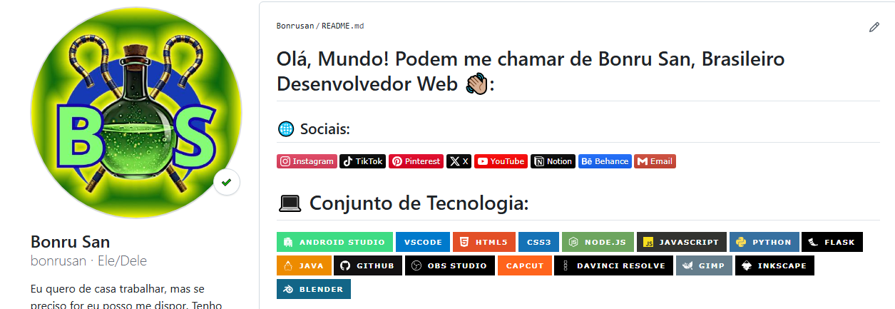

Currículo
Nome: Bruno dos Santos Melo;
Idade: 27;
Escolaridade: Ensino Médio Completo;
Estado Civil: Solteiro;
Eu nasci em uma cidade do interior do estado do Piauí a 27 quilômetros da capital Teresina.
Tenho formação técnica pelo Instituto Federal do Piauí, campus Teresina zona sul, em técnico de estradas.
Com o curso concluído, estou pronto para o mercado de trabalho.
Estou sempre inovando meus conhecimentos e me atualizando com as tecnologias que surgem no mercado.
Saber utilizar as tecnologias que estão em alta, como as Inteligências Artificiais, é essencial para ter espaço na concorrência por um novo emprego, e por isso não deixei de me atualizar quanto a elas.
Acesse o meu perfil do GitHub

Técnico em Estradas;
- Topografia;
- Informática aplicada a estradas;
- AutoCAD;
- Ensaios de Solos;
- Hidrologia;
- Matemática Financeira;
- Máquinas pesadas;
Conhecimentos Gerais;
- Linguagem HTML e CSS;
- Linguagem JavaScript e Python;
- Reboot para Windows (Pen drive);
- Hospedagem gratuita e paga;
- Campanhas no Facebook Ads;
- Venda com criativo na fase de validação;
- Métricas das campanhas de anúncios;
- Excel básico;
- Edição de vídeo no CapCut e DaVinci Resolve;
- Edição de imagem com o Gimp + Canva;
- Noções de imagem vetorial com Inkscape;
- Noções de post redes sociais com YouTube, TikTok e Instagram/Facebook;
- Linguagem fácil para ChatGPT e outras IAs;
- Velocidade na digitação;
Referências para conhecimentos gerais: redes sociais, Gustavo Guanabara, BroCode;
Tenho certificado do SEBRAE para MEI e um certificado da Fundação Bradesco de Comunicação Empresarial, estou mais ativo no TikTok e no Instagram;
Outras informações estarão no meu currículo impresso;